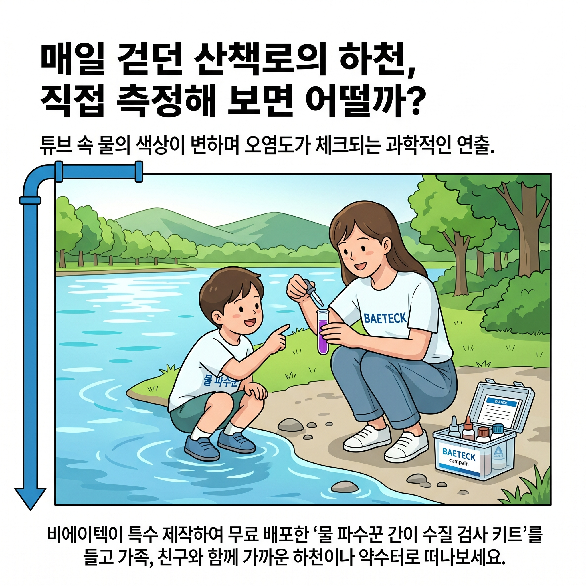

무맥동 다이어프램 정량펌프 기술
PAC 및 PKD 시리즈 등 최고 정밀도의 무맥동 다이어프램 정량 펌프를 직접 설계·제작합니다. 맥동 현상을 원천 차단하여 정밀하고 균일한 약품 투입을 보장합니다.
제품 라인업 보기 →(주)비에이텍은 다이어프램형 무맥동 정량 펌프 제작 및 수처리 설비의 무결점 설치·수리를 제공하는 엔지니어링 파트너입니다.
완벽한 수처리 솔루션과 혁신적인 펌프 제어 기술로 산업 현장을 리드합니다.
PAC 및 PKD 시리즈 등 최고 정밀도의 무맥동 다이어프램 정량 펌프를 직접 설계·제작합니다. 맥동 현상을 원천 차단하여 정밀하고 균일한 약품 투입을 보장합니다.
제품 라인업 보기 →정량펌프 유지관리지침서에 따른 철저한 예방 점검과 신속 수리 서비스를 시행합니다. 축적된 수리 노하우로 유체의 누출을 방지하고 설비 수명을 극대화합니다.
유지관리지침서 다운로드 (PDF) →하폐수 처리, 정수장, 산업 폐수 설비 등 현장의 유체 성상과 운전 압력을 반영하여 최적화된 맞춤형 펌프 패키지 제작 및 완벽한 현장 배관 시공을 약속드립니다.
장비 및 인프라 확인 →철저한 유지관리 기준 준수와 예방 점검으로 고장률 제로 지향
긴급 장애 극복을 위한 24시간 365일 비상 기술 영업 채널 운영
등속도캠 및 다중 헤드 크로스 교차 이송 기술을 활용한 정밀 제어
국내외 특허 출원 및 대기업·공공기관 납품 및 오버홀 수리 실적
비에이텍만의 0.01% 극한의 정밀 오차 보장 기술을 라이브 데이터로 테스트해보세요.

평화롭던 산책길, 어두운 물빛과 불쾌한 냄새가 코를 찌릅니다. 우리가 가꾸고 보존해야 할 생명의 터전인 하천이 조금씩 생명력을 잃어가고 있었습니다.